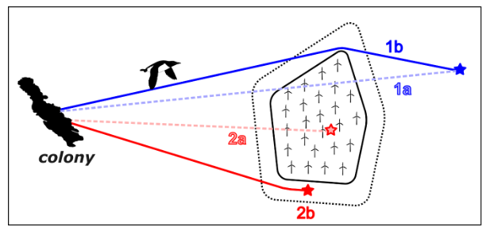

Model purpose
seabORD is a model designed to predict how offshore renewable developments (ORDs) may affect seabird populations through sub-lethal displacement and barrier effects.
The model estimates how changes in foraging behaviour and energy expenditure during the chick-rearing period influence key demographic outcomes, including:
Adult body mass
Adult survival
Breeding productivity
To assess the potential impact of an ORD, simulations are run under both baseline conditions (without ORDs) and impact scenarios (with one or more ORDs present). Differences between these simulations provide estimates of the consequences of ORD exposure for adult condition, survival, and breeding success.
In practice
seabORD can be used to assess the potential impacts of a single offshore renewable development or the combined effects of multiple developments (cumulative effects) within a species’ foraging range (see Figure 1).
A typical workflow involves:
Preparing species-specific inputs and spatial data.
Calibrating the model to represent baseline conditions.
Running a baseline simulation with no ORDs present, and running one or more impact scenarios with ORD footprints included.
Comparing demographic outcomes between scenarios.
Figure 1 below provides a view of how the model is applied in practice and how it can be used to assess ORD impacts resulting from one ORD, or several in combination.
Model structure
The seabORD code is written in R and is available on GitHub.
The model consists of two main stages (see Figure 2):
Set-up process (and calibration)
Main simulation model.
Within each time step the adults make foraging decisions and then based on the outcomes of those decisions, a pair’s chick’s condition is updated depending on whether its parents managed to catch enough prey to feed themselves and their chick, with prioritisation of themselves occurring when constraints imposed by foraging conditions and/or experienced body condition are sufficiently bad. The four core processes of seabORD are summarised below.
Foraging and adult behaviour – At the start of each time step, adult birds are assigned foraging locations based on bird density maps. The prey available within these locations is used to calculate the time required to obtain their food requirement (
calc_foragecapture) using an intake rate based on a Type II functional response (Holling, 1959), adjusted to account for the effect of competition from conspecifics.
Using this information, togethet with knowledge of associated activities such as flying to and from the foraging site (including barrier effects of flying around the ORD), their own condition, and whether or not their chick is alive, each adult then chooses the optimal foraging strategy for this time step (calc_strategy). The selected strategy seeks to meet daily energy requirements while minimising time away from the chick (unnattendance).
This determines how many trips the adult will undertake in this time step and what behaviour the adults exhibit with respect to their chick, such as potentially leaving them unattended or abandoning the breeding attempt due to constraints.Chick provisioning and growth – Food captured by each adult during the time step is then converted to energy shared between themselves and the chick. The total energy provided by both parents is used to calculate chick growth and body mass. Chick body mass is then compared with the expected body mass for that stage of development. If body condition falls below a critical threshold, the chick dies from starvation (
calc_chickcare).
Surviving chicks are then subject by several stochastic mortality processes relating to other potential causes of death: unattendance by the parents (calc_unattendmortality), other causes like storms (calc_othermortality), and in the case of puffins, predation via hunger driving them to the entrance of the burrow (calc_puffinmortality).Adult state update – Each adult’s state variables are then updated with the chick’s status, which can result in a change in the feeding mode if their chick dies, having consequences for their foraging strategy in the next time step. Adult body masses are then updated based on the energy gained and expended foraging and in other activities (
calc_adultbmchange). Finally, the daily energy requirements for the next time step are calculated (calc_adultdee)Adult survival – Upon completion of all time steps for each season (baseline/scenario) within each replicate, adult survival over the subsequent winter period is estimated using the mass of each adult which survived to the final time step, representing the end of the chick-rearing season. Survival is estimated using relationships from previously published studies (Erikstad et al., 2009; Oro & Furness, 2002), by converting the mass of each adult into a probability of survival via mass-survival relationships (
calc_pSurvival). This probability is then passed to a stochastic process which dictates which individuals survive according to their relative probabilities.
![Figure 2: Overview of the seabORD modelling framework. Prey availability is first calibrated and combined with ORD and spatial map inputs. Spatial components are defined before simulation replicates are initialised. Within each replicate, matched baseline and impact scenarios are simulated through repeated chick-rearing time steps comprising adult foraging and behavioural decisions, chick provisioning and growth, and adult state updates. Adult survival is subsequently estimated, and outputs are summarised across replicates as ORD-induced changes in adult mass, survival and breeding success. Purple boxes indicate inputs and outputs, yellow boxes indicate setup and processing stages, green boxes indicate ecological processes, and blue labels identify iterative loops.](images/Code_structure_nested_schematic.png)
ORD interactions
Adult behaviour concerning sublethal interactions with ORDs is split into two widely accepted potential impacts (see Figure 3):
- barrier effects: occur when a bird is attempting to access a foraging site from the colony where the most direct path is obstructed, such that avoiding the ORD results in increased travelling distance with potential energetic consequences. Barrier effects operate within the model by adjusting baseline flight paths (when no ORDs are present) using the shortest path directly around the ORD in the scenario run.
- displacement effects: occur when an individual is excluded from foraging in a potentially productive area within an ORD footprint. The model represents this by displacing a bird from its previously chosen foraging location inside an ORD footprint into a new location in the displacement zone, with new foraging locations chosen proportional to the probability of bird usage within the displacement zone.
